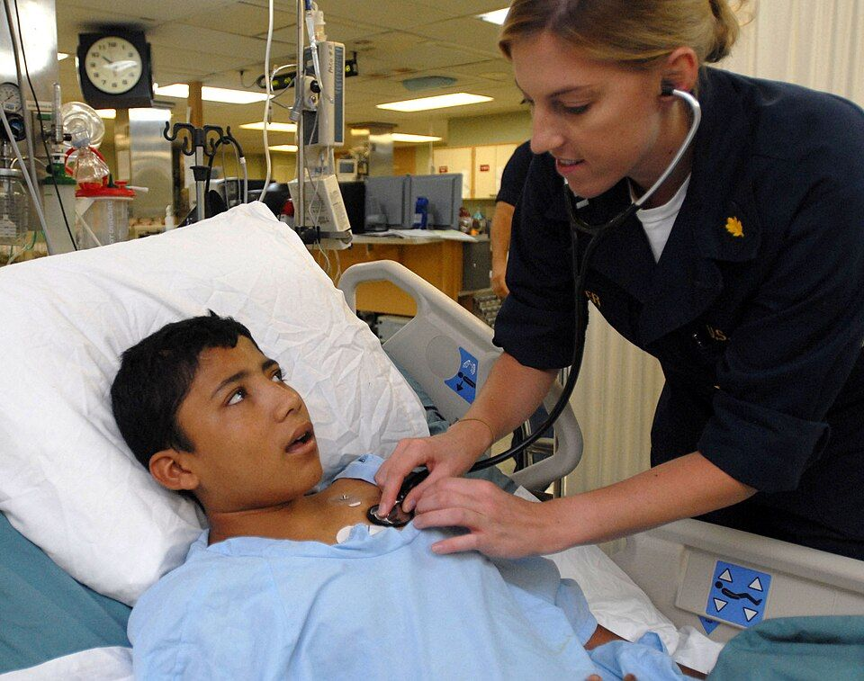

Administración segura de medicación
Los errores de medicación son una de las principales causas de daño evitable en la asistencia sanitaria. Unas pocas comprobaciones sistemáticas evitan la mayoría.
Revisado en noviembre de 2026 · Fuentes al final de la página

.jpg){kind=link}
Los correctos
Antes de administrar cualquier medicamento, comprueba:
- Paciente correcto, con dos identificadores y la pulsera.
- Medicamento correcto, comparando la etiqueta con la prescripción. Atención a los nombres que se parecen.
- Dosis correcta, recalculando si se ha hecho una dilución o una conversión de unidades.
- Vía correcta, sobre todo con jeringas orales y enterales, que no deben poder conectarse a vías intravenosas.
- Hora correcta.
- Registro correcto justo después de administrarlo, nunca antes.
Muchos protocolos añaden comprobar alergias, informar al paciente y respetar su derecho a rechazar el medicamento.
Medicamentos de alto riesgo
Son los que, si se usan mal, causan daños graves con más probabilidad. Entre ellos están la insulina, los anticoagulantes, los opioides, el potasio y otros electrolitos concentrados, la quimioterapia y los agentes sedantes y bloqueantes neuromusculares.
- Usa un doble chequeo independiente: otra enfermera comprueba por su cuenta el cálculo y la programación de la bomba.
- No almacenes cloruro potásico concentrado en las unidades si no es imprescindible; usa preparados ya diluidos.
- Escribe «unidades» completo, nunca «U», y no uses ceros detrás de la coma (5 mg, no 5,0 mg).
Si ocurre un error
Atiende primero al paciente, avisa al médico responsable y notifica el incidente en el sistema de tu centro. Notificar sirve para aprender y cambiar el sistema, no para buscar culpables.
Fuentes
- Instituto para el Uso Seguro de los Medicamentos (ISMP-España). Recomendaciones de prácticas seguras y lista de medicamentos de alto riesgo. www.ismp-espana.org
- Organización Mundial de la Salud. Tercer Reto Mundial por la Seguridad del Paciente: «Medicación sin daño» (2017). www.who.int
- Ministerio de Sanidad. Estrategia de Seguridad del Paciente del Sistema Nacional de Salud 2015-2020 y sistema de notificación SiNASP. seguridaddelpaciente.sanidad.gob.es